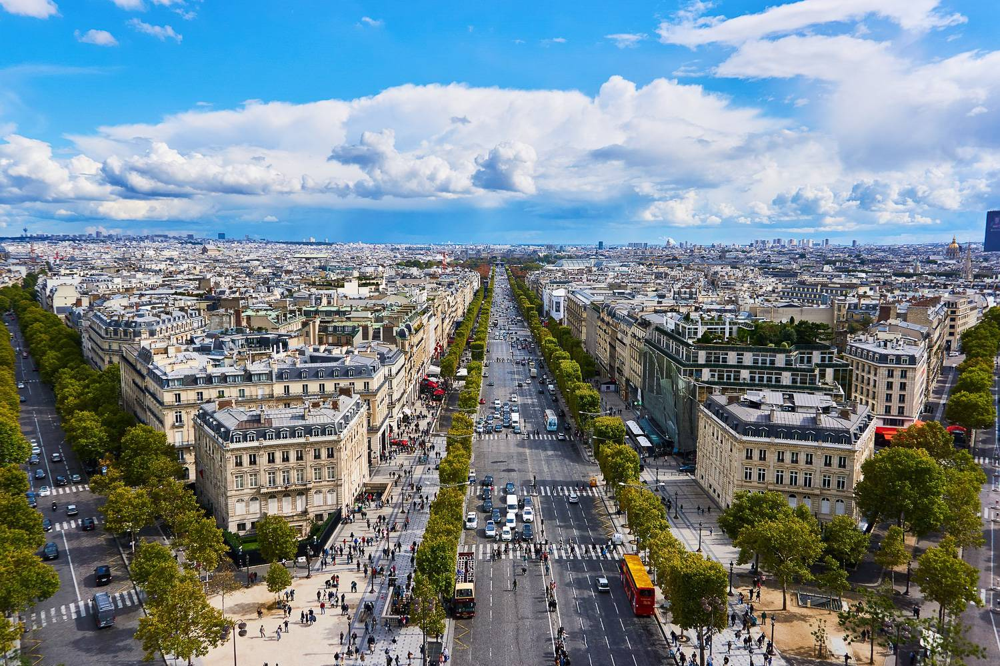

In a beautiful, romantic old city like Paris, warm weather isn’t the only reason to get out and go sightseeing, but it sure is the most effective! With the arrival of summer, native Parisians and tourists alike can be seen outside roaming the streets, doing some casual shopping (just in time for the Paris Summer Sales!), and lounging around lush green parks and the sandy shores of Paris Plages. The summer season in Paris is also an invitation to travel! You too can enjoy the beautiful summer weather of Paris, and perhaps fancy yourself a Paris local by staying in an authentic Paris apartment. Whether for a whirlwind weekend in the City of Lights or a more extended stay, we’ve compiled a guide to some of the best things to do in Paris this summer and a few showcase furnished apartments to help you fall in love with city. Let’s go!
Of course you can’t miss all of the major attractions and sightseeing spots in Paris, but sometimes the best way to get acquainted with a city is by seeing its natural side. After the blooming flowers of spring have subsided, Paris’s parks become verdant oases full of shady trees, rolling hills, and unexpected outdoor activities like boating, sports like cycling and rollerblading, and even horseback riding and fishing!If you’ve checked all the classic Paris parks off your list, try a lesser-known gem like the Coulée verte René-Dumont. This modern park (opened in 1993) was constructed on the infrastructure of a decommissioned railway and offers nearly 3 miles of landscaped walkways through charming flowers, shrubs, trees, and sculptures. The elevated park is perfect for a romantic summer stroll and offers a different perspective on Paris than the most trafficked green spaces
(though all are still worth a visit!). The Coulée verte is located in the 12th Arrondissement.